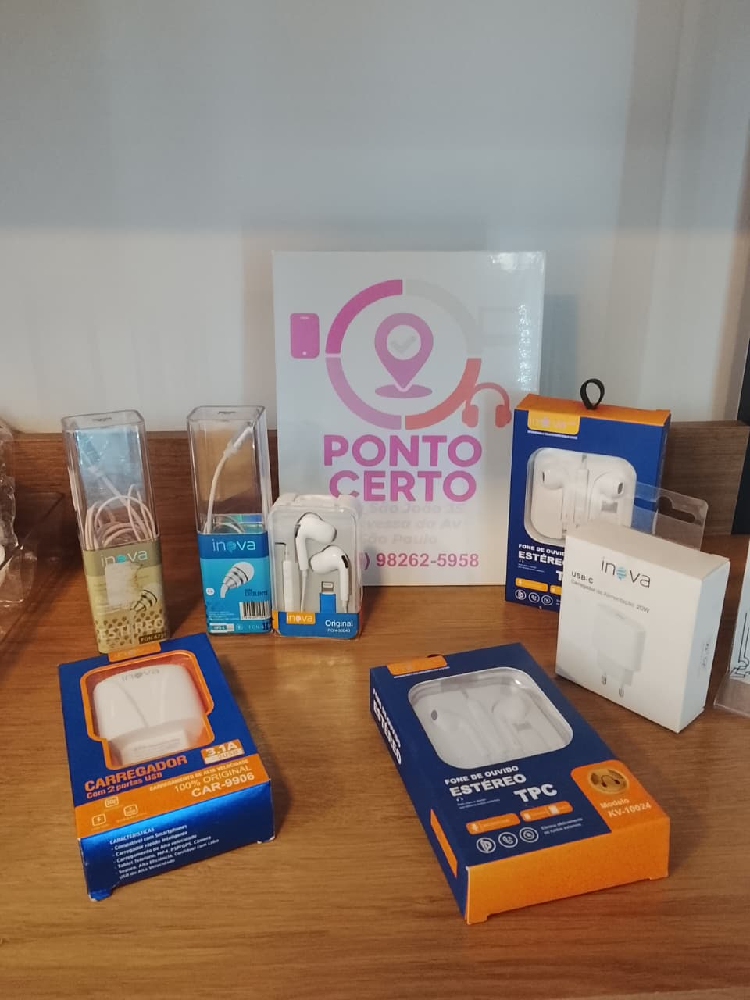
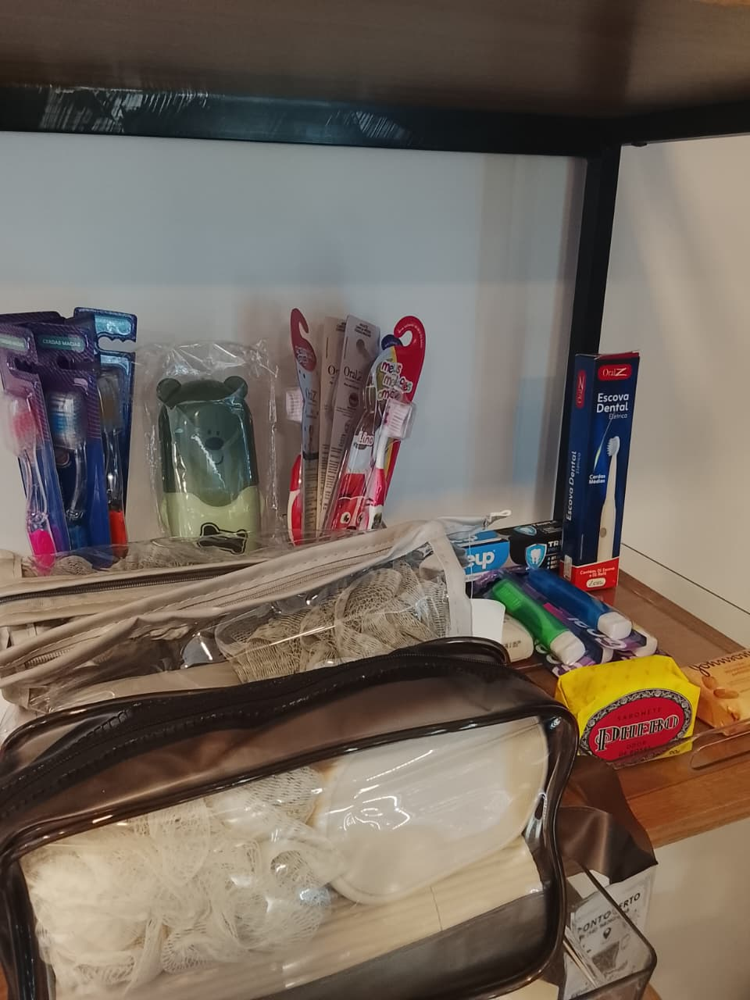
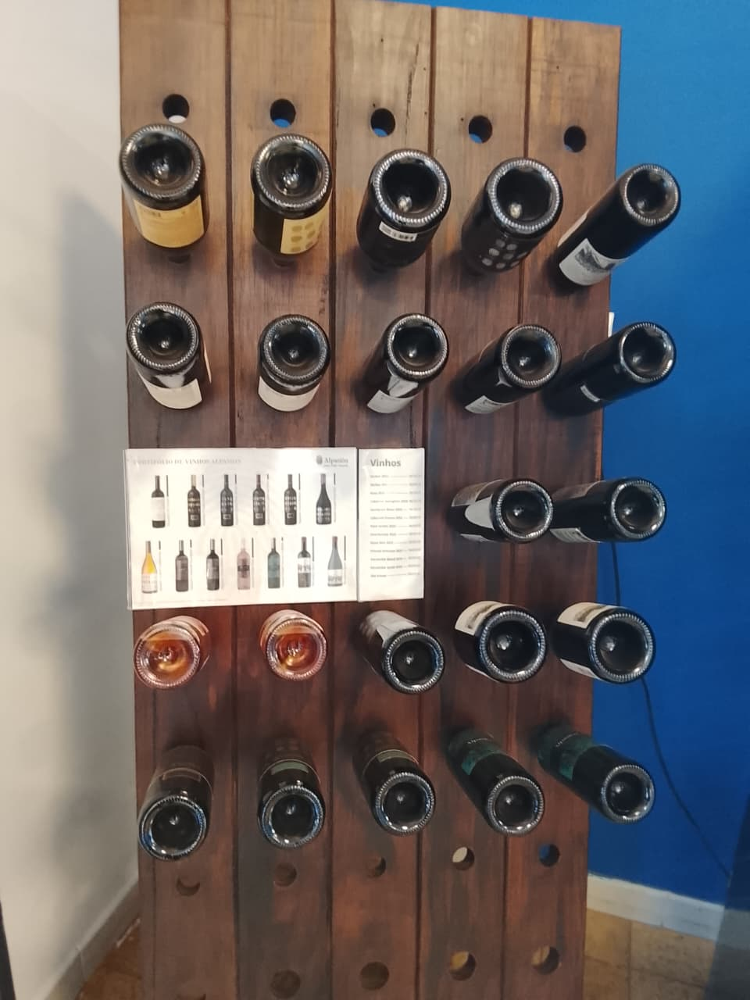
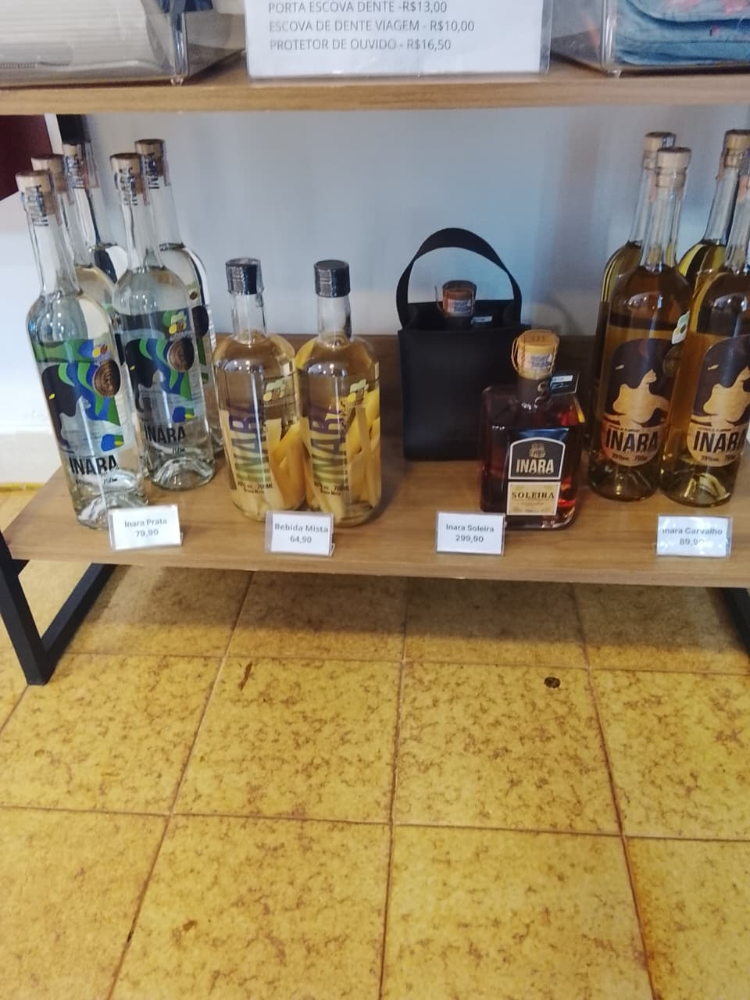
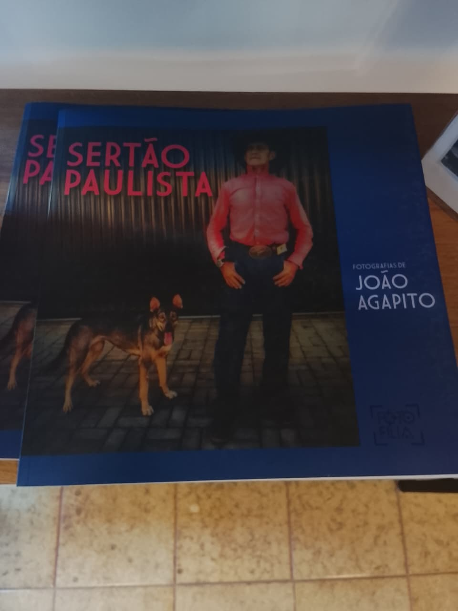
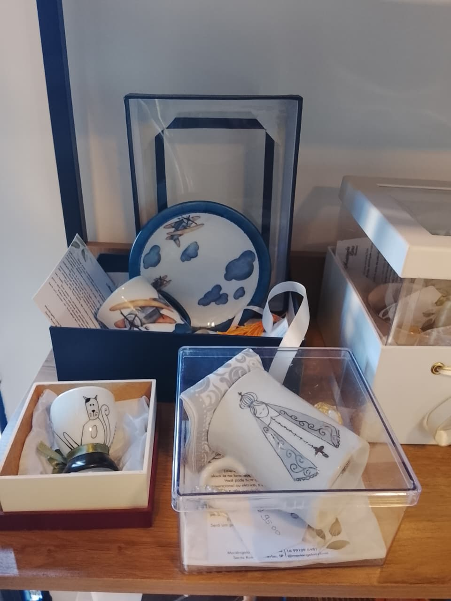
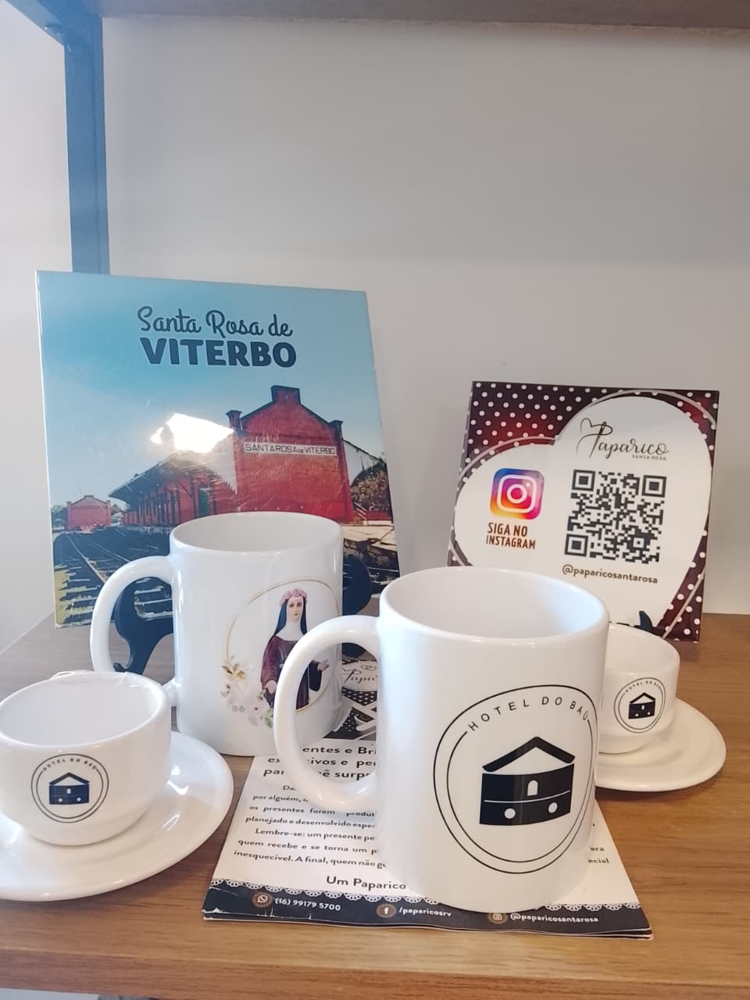

Ponto Certo
Carregadores e fones de ouvido para celulares Android e iPhone.
Itens úteis para sua viagem e para o dia a dia, disponíveis para compra no hotel.
Consulte modelos e valores na recepção.
Produtos e facilidades disponíveis durante sua estadia

Carregadores e fones de ouvido para celulares Android e iPhone.
Itens úteis para sua viagem e para o dia a dia, disponíveis para compra no hotel.

Variedade de itens para cuidados pessoais e higiene, para você utilizar durante sua estadia.
Encontre itens essenciais para trazer mais praticidade e conforto durante sua hospedagem.

Vinhos importados com variedade de rótulos e diferentes notas aromáticas.
Conheça as opções disponíveis e escolha um vinho especial para aproveitar durante sua estadia.
Vinhos importados com variedade de rótulos e diferentes notas aromáticas.
Conheça as opções disponíveis e escolha um vinho especial para aproveitar durante sua estadia.

Cachaças produzidas na região, com diferentes tipos de conservação e sabores.
Conheça as variedades disponíveis e leve um produto regional como lembrança da sua estadia.

Uma obra para guardar as recordações da nossa terra, tão rica e diversa.
Conheça o Sertão Paulista através das fotografias de João Agapito e leve consigo um pouco da história e da cultura da nossa região.

Peças artesanais feitas com todo amor, carinho e cuidado em cada detalhe.
Uma lembrança especial e delicada para levar consigo ou presentear alguém querido.

Lembranças e produtos personalizados para levar um pedacinho de Santa Rosa de Viterbo com você.
Alguns produtos são feitos mediante encomenda antecipada, além das opções disponíveis na loja física da Paparico.